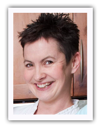

Passionate about pies? Crazy about cakes? Gaga over focaccia?
Well, you’re in the right place. I share my great enthusiasm for baking. I’m Trish, a self confessed cake geek, living in Carrigaline, Co. Cork. With 20+ years baking spectacular wedding cakes, my business “A Touch of Magic” is ever evolving so now I’m teaching my craft.
I create bespoke wedding cakes specializing in chocolate, cocoa butter painting and edible works of art, my love now extends to teaching kids and adults alike.
Make your dream come true!
- 20 years of experience
- Best selling Book
- special payment conditions
- YouTube channel

Patricia O'Flaherty
“ It doesn’t matter how well your creations turn out, it is all part of the fun as I likes to describe how I and my followers whisked, cracked, walloped, and smashed our way through all my recipes during the lockdown and most importantly kept smiling and had fun. “ you can find more about our job on our youtube channel